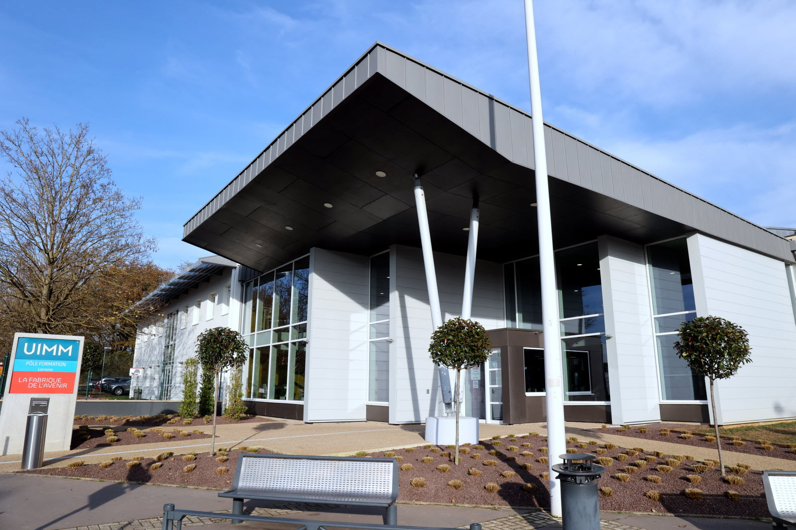

BTS
Diplôme en cours
BTS SIO — Option SISR
Pôle Formation UIMM Yutz
2024 — 2026
Le BTS Solutions d’Infrastructure, Systèmes et Réseaux est le cœur de mon expertise actuelle. Cette formation me permet de maîtriser l'ensemble de la chaîne de valeur d'un parc informatique : du câblage physique à la sécurisation des services cloud.
⚙️ Administration & Réseaux
- Réseaux TCP/IP
- Configuration des appareils (switch, routeur et PC)
- Configuration VLAN, Routage (statique/dynamique), Router-on-a-stick, DHCP, sécurisation des ports
- Pare-feu (OPNSense)
🛡️ Sécurité & Systèmes
- Administration Serveur : Windows (AD/GPO/DHCP) et Linux (LAMP)
- Virtualisation (VMware, Proxmox, Hyper-V)
- Sauvegardes (Veeam Backup/UrBackup)
- Services (GLPI & Nextcloud)
- Maintenance : remplacement du matériel défectueux